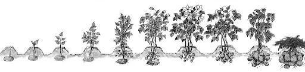

Добриво для картоплі GREENODIN GRAY
Добриво GREENODIN GRAY для картоплі: 25 г під кущ або на 1 м² під час садіння, з другого року норму зменшують на 20%. Після збирання — 150 кг/га для переробки рослинних решток.
Базова лінійка
- Тип
- Комплексне, 100% органічне, пролонгованої дії, з живими бактеріями
- Форма
- Гранули
- Виробник
- Україна
- Сертифікація
- Organic Standard, Регламент (ЄС) 2018/848
- Термін придатності
- 3 роки з моменту відкриття упаковки
- Безпека
- Безпечне для людей, бджіл і тварин
- Артикул
- GR-potatoes
Добриво GREENODIN GRAY для картоплі: 25 г під кущ або на 1 м² під час садіння, з другого року норму зменшують на 20%. Після збирання — 150 кг/га для переробки рослинних решток.
- Підвищення родючості ґрунту
Поліпшує агрономічні та біологічні показники ґрунту.
- Урожайність
Підвищення врожайності до 65%.
- Зниження токсичності
Знижує токсичність ґрунтів і пригнічує фітопатогенні мікроорганізми.
- Життєздатність рослин
Посилює життєздатність рослин і стійкість до захворювань.
- Стимуляція росту
Прискорює ріст культур до 30%.
- Економія води
Знижує витрату води на полив до 30%.
- Стресостійкість
Підвищує адаптацію рослин до абіотичних і біотичних стрес-факторів.
- Пролонгована дія
Накопичувальний ефект дає змогу знизити норму з 250 до 80 кг/га до 6-го сезону.
| Природні мінеральні компоненти | Леонардит, збагачений гуміновими та фульвовими кислотами: природне живлення рослин і корисних бактерій |
|---|---|
| Аморфний кремній | Підтримує потрібну кислотність pH, накопичує й структурує воду, живить коріння капілярним способом |
| Макро- та мікроелементи | Для росту рослин і стійкості до стресових факторів |
| Корисні бактерії | Агрономічно корисні мікроорганізми, що запускають гумусоутворення |
| Органічна речовина (C) | не менше 50–55% |
| Азот (N) | не менше 150 мг/100 г |
| Фосфор (P₂O₅) | не менше 150 мг/100 г |
| Калій (K) | не менше 200 мг/100 г |
- Кислотність: нормалізує кислотність ґрунту до потрібної рослині
- Флора: пригнічує патогенну флору ґрунту
- Гумусоутворення: створює середовище для природного гумусоутворення й розвитку корисних бактерій
- Якість ґрунту: поліпшує якість ґрунту
- Фітотоксичність: знижує фітотоксичність ґрунту
- Імунітет: зміцнює імунну систему рослин
- Ефект: пролонгований, дає змогу щосезону знижувати норму внесення на 20%
- Шкідники: відштовхує шкідників
- Стреси: підвищує стійкість до стресів
- Морозостійкість: формує морозостійкість рослин
- Посуха і спека: підвищує посухо- та жаростійкість
- Полив: знижує норми поливу
Використання сучасних інноваційних добрив TM GREENODIN забезпечує:
- спрощення процесу, оскільки комплексно вирішує завдання;
- тривала дія і залишається у грунті, створюючи екосистему, на відміну рідких органічних добрив і більше мінеральних, руйнують її;
- накопичення, що дозволяє щороку зменшувати норму внесення GREENODIN на 20% від початкової. Через 5 років нормою внесення стане лише 20% від зазначених у цій інструкції;
- відновлення природної родючості ґрунту з легкодоступним для рослини мінеральним харчуванням та природним утворенням гумусу;
- захист від відомих хвороб картоплі;
- дозволяє скоротити полив до 30%.
- зміцнення рослини та створення потужної кореневої системи, включаючи бульби;
- живі бактерії у складі добрив:
- борються із розвитком патогенної флори.
- «Відтворюють» з ґрунту та атмосфери макроелементи Азот, Фосфор, Калій, а також мікроелементи бор, залізо, марганець, мідь, молібден і цинк, даючи достатнє природне харчування у формі, що легко засвоюється для рослин;
Дані добрива захищені патентами та сертифіковані Organic Standard, а отже розроблені відповідно до екологічних вимог світового ринку рослинництва та еквівалентні європейським стандартам ЄС №834/2007 та №889/2008.
Вирощування картоплі
Дотримуючись рекомендацій щодо вирощування картоплі, ви непременно отримаєте гідну нагороду у вигляді якісного і врожайного урожаю, в здоровому ґрунті.

Ґрунт для картоплі
Картопля віддає перевагу розслабленому, родючому та добре дренованому ґрунту, який забезпечує хорошу циркуляцію повітря і дозволяє кореням картоплі легко проникати в нього. Гарна дренажна система є дуже важливою для картоплі, оскільки надмірна волога може спричинити гниль клубнів. Грунт повинен бути достатньо добре дренованим, щоб вода не застоювалася в кореневій зоні. Для підвищення його родючості використовуйте GREENODIN GRAY у вказаній вище дозі, який також компенсує рН, якщо ґрунт є кислим, оскільки ідеальний рівень рН для ґрунту прагне до рН 6.0.
Вибір насіннєвої картоплі
Оберіть насіннєвий картопляний матеріал без захворювань, правильної форми і, бажано, не пересушений. Ідеальним варіантом буде сертифікований органічний картопляний матеріал. Вирішіть, чи будете садити цілими клубнями, чи розрізаними (очками). У випадку другого варіанту, розріжте насіннєвий картопель на частини з одним або двома очками на кожному шматочку. Залиште розрізані насіннєві картоплі (очка) на день або два в прохолодному та добре провітрюваному місці. Обсипте розрізані насіннєві картоплі порошком діатоміту або деревної золи, щоб запобігти захворюванням.
Весь посадковий матеріал, включаючи цілі клубні, перед посадкою картоплі потребує обов'язкового прогрівання. Прогрівання повинно тривати до того моменту, поки виростуть росточки завдовжки 2-3 см (5-7 днів).
Посадка картоплі
Перше правило – не поспішати!
Садимо картоплю клубнями. Відстань між лунками залежить від сорту картоплі. Для ранніх сортів з не занадто густими листками достатньо 25 см, для пізніх - 30-35 см. Листки одного куща не повинні затіняти листки іншого, оскільки для інтенсивної фотосинтезу пагонам потрібно якомога більше світла.
Виняток - випадок, коли садять розсаду з очками або окремими відводками: достатньо, щоб відстань між лунками була 20-25 см. Чим важча ґрунт, тим меншою глибиною роблять лунки: для піщаних ґрунтів - 8-10 см, для глинистих - 5-6 см.
Посадковий матеріал потрібно покрити землею і ретельно полити водою. За мірою зростання рослин ущільнюйте грунт навколо стебел, щоб клубні були прикриті з метою запобігання зеленінню. Стежте, щоб не пошкодити стебла або корені при укладанні ґрунту.
Добрива для посадки картоплі
Вибір добрив для посадки картоплі залежить від сорту картоплі, схеми посадки картоплі, сезону та його погодних умов. Як правило, застосовують ранні сорти картоплі. До посадки картоплі або безпосередньо при посадці вноситься комплексне органічне добриво для картоплі GREENODIN, нормою внесення 250 кг/га або 25г/кв.м, методом розсіювання/розкидання.
Враховуючи, що добриво для картоплі є органічним, перевищення рекомендованої дози або безпосередній контакт з посадковим матеріалом є безпечним.
Бажано, щоб частина органічного добрива GREENODIN потрапила безпосередньо в лунку під час посадки, що сприятливо відобразиться як ефект від застосування.
- Якщо ваш ґрунт кислий <4.5-6.0 pH, то слід використовувати GREENODIN GRAY, 25 грам на кущ або на квадратний метр, що в промислових масштабах становить 250 кг/га.
- Якщо ваш ґрунт нейтральний або легко лужний >7.0 pH, то слід використовувати GREENODIN BROWN, 25 грам на кущ або на квадратний метр, що в промислових масштабах становить 250 кг/га.
Щорічно рекомендується зменшувати норму внесення органічного добрива GREENODIN на 20% після першої посадки, при цьому не втрачаючи врожайності, завдяки кумулятивному ефекту.
В результаті забезпечений колосальний економічний ефект від найменшого обсягу добрив для картоплі та засобів їх внесення, починаючи з 6-го року, з нормою застосування 80 кг/га або 8 г/кв.м.
Для досягнення кумулятивного ефекту норма внесення добрива під картоплю за роками виглядатимуть так:
1-й рік - 250 кг/га або 25г/кв.м;
2-й рік - 200 кг/га або 20г/кв.м;
3-й рік - 160 кг/га або 16г/кв.м;
4-й рік - 128 кг/га або 13г/кв.м;
5-й рік - 100 кг/га або 10г/кв.м;
6-й и наступні роки - 80 кг/га або 8 г/кв.м.
Підживлення картоплі
Як правило, цілком достатньо застосувати добриво для картоплі GREENODIN GRAY під час посадки. Однак, для уважних фермерів ефективним виявиться метод підживлення картоплі за допомогою органічних добрив GREENODIN GRAY або GREENODIN BROWN на лужному ґрунті. Для цього базова доза вноситься на базову площу і обильно зволожується водою.
Полив картоплі
Регулярно поливайте ґрунт, щоб він був рівномірно вологим, але уникайте замочування та верхнього поливу, щоб не переохолоджувати рослини та не спричиняти захворювання листя. Глибоко поливайте рослини один або два рази на тиждень, в залежності від регіону вирощування та погодних умов. Накривайте ґрунт мульчею, щоб зберігати вологу та запобігати її випаровуванню. У разі необхідності з поливу та появи посухи, одним з способів збільшення клубнів картоплі є видалення квіток картоплі, для розвитку яких не буде використана волога. Однак така травма може привернути увагу основного шкідника - колорадського жука.
Функція накопичення вологи кремнієвою матрицею GREENODIN GRAY та капілярне споживання картоплею дозволяють скоротити полив до 30%.
Шкідники картоплі
Використовуйте міжряддя або пастки для запобігання пошкодженням від комах. Заохочуйте корисних комах, таких як божі коровки і златоглазки, для боротьби зі шкідниками. Регулярно оглядайте рослини, щоб виявити ознаки пошкоджень та зараження шкідниками. У крайньому випадку використовуйте органічні інсектициди, такі як порошок діатоміту, олія німа або піретрин. Уникайте використання хімічних пестицидів, оскільки вони шкідливі для здоров'я і заборонені в органічному землеробстві.
Збирання врожаю картоплі
Збирайте картоплю, коли верхівки відмирають, а шкірка затвердіє, дотримуючись рекомендованих норм дозрівання. Копайте обережно, щоб не пошкодити бульби. Після витягування очистіть картоплю від землі, але не мийте її. Дайте картоплі висохнути протягом 2-3 тижнів в прохолодному, сухому, темному та добре провітрюваному місці, щоб покращити якість зберігання. У стандартному підході збір врожаю картоплі виконують після видалення зелені картоплі з ділянки, щоб уникнути поширення фітофторозу.
Однак, з попереднім застосуванням GREENODIN, де Bacillus subtilis є обов'язковим компонентом добрива, шансів для фітофторозу немає, і тоді зелень картоплі, багата корисними елементами, слугує не тільки органічним добривом для наступних рослин, але й прекрасною основою для розвитку агрономічно корисних бактерій для збільшення гумусу в грунті.
Зберігання картоплі
Зберігайте картоплю в прохолодному, темному та добре провітрюваному місці, наприклад, у підвалі або сховищі для коренеплодів. Підтримуйте температуру у межах 5-7°C та відносну вологість на рівні 90-95%, щоб запобігти проростанню та псуванню. Сортуйте картоплю, щоб видалити пошкоджені або захворілі клубні, і використовуйте їх у першу чергу.
Хвороби картоплі
Висаджуйте стійкі сорти картоплі, щоб знизити вплив хвороб. Дотримуйтесь сівозміни, щоб запобігти односторонньому навантаженню ґрунту та накопиченню хвороб, що передаються через ґрунт. Класичне правило: в одному й тому ж місці картоплю можна садити лише 1 раз за 4 роки. Пам'ятайте, що найкращі попередники для картоплі - озимі зернові, багаторічні трав'яні сівозміни (1-2 роки), суміші злаків з бобовими, паюча або зайнята земля, ріпак, редька, люпин, льон, кукурудза та інші польові культури.
Регулярно спостерігайте за рослинами, щоб виявити ознаки хвороби, такі як жовтіння листя або уповільнення росту. Видаліть та знищте всі хворі рослини та клубні, щоб запобігти поширенню хвороби, або використовуйте спеціальні бактеріальні препарати (наприклад, стрептоміцин).
Фітофтороз. Це захворювання рослин з родини пасльонових, таких як картопля, томати, перці, баклажани, спричинене спорами грибка Phytophthora infestans. МикоХелп є ефективним багатофункціональним, багатокомпонентним мікробним препаратом, який допомагає лікувати грибкові та бактеріальні захворювання. Він підходить для профілактики захворювань, стимулює швидкий ріст коренів та збільшує площу поглинання поживних речовин. З допомогою цього препарату можна обробляти ґрунт, насіння, розсаду, а також живити кореневу систему та обприскувати рослини.
Парша. Це грибкове захворювання, яке поражає клубні картоплі, а також кореневу систему та підземну частину стебла. Заражена картопля втрачає до 30% крохмалю, її смак помітно погіршується, а термін зберігання зменшується. Дуже важлива профілактика цієї хвороби, оскільки розвивається у ґрунті.
Виділяють 4 види картопляної парші:
- звичайну
- порошисту
- сріблясту
- чорну (ризоктоніоз)
Методи лікування картопляної парші зводяться до профілактики захворювання на ділянці та захисту бульб:
- Відбирати посадковий матеріал.
- Зберігати посадкові бульби тільки в холодному, сухому місці, що добре провітрюється, не допускаючи появи конденсату.
- Вирощувати стійкі до парші сорти, але слід пам'ятати, що абсолютно стійкої картоплі не буває.
- Попередньо пророщувати картоплю на світлі.
- Дотримуватися сівозміни.
- Регулярно поливати кущі в період цвітіння із розрахунку 0,5 літра води на одну рослину.
- Лужний ґрунт підкисляти використовуючи GREENODIN BROWN.
Фузаріоз. Препарат Sclerocid®, за рекомендованою нормою витрати 1 літр на тонну, має 100% ефективність проти грибкової інфекції фузаріозу і аскохітозу. Цей продукт виготовляється надійною українською компанією БТУ-Центр
Рак картоплі. Увага! Якщо виявлено хоча б одну хвору клубень, необхідно негайно звернутися до інспекції з охорони рослин. Картоплю, заражену раком, ні в якому разі не можна споживати. Щоб запобігти потраплянню зооспорангій у навоз, не годуємо хворі клубні сировиною худобу. Заражені раком кущі разом з клубнями, стеблами і листям слід спалювати або попередньо обробляти керосином. Збудником рака картоплі є патогенна грибкова колорадська земля Synchytrium endobioticum, яка паразитує не лише на картоплі, але й на інших пасльонових, включаючи томати.
Виявити його дуже просто, оскільки на початку захворювання навколо очей клубнів з'являються білі випуклості, які поступово темніють і перетворюються в великі бородавчасті коричневі утворення, схожі на суцвіття кольорової капусти. Після цього бородавчасті випуклості поширюються на пагони і самі листки. Заходи для боротьби мають бути однозначними і негайними
Догляд за ґрунтом після збирання картоплі
В класичній агрономії ботву картоплі видаляють з ділянки, щоб запобігти поширенню хвороб, оскільки спори фітофторозу активно розносяться вітром та опадами. Однак у нашому випадку догляд за грунтом після збору картоплі передбачає мінімальні втручання і не потребує видалення ботви. Це зумовлено наявністю у GREENODIN бактерії bacillus subtilis, яка ефективно запобігає розвитку таких хвороб. Тоді ботва картоплі, в якій також накопичується достатня кількість корисних елементів, виступатиме добривом і чудовим органічним кормовим середовищем для розвитку корисних бактерій, що сприяють збільшенню гумусу у ґрунті.
Зазвичай збір картоплі призводить до порушення цілісності родючого шару ґрунту, оскільки клубні видобуваються з ґрунту. Проте, застосовуючи догляд за грунтом після збору картоплі з використанням 150 кг/га або 15 г/кв.м. GREENODIN, з урахуванням потрібної кислотності ґрунту, разом з бактеріальним деструктором Sterne, бактерії-санітари перетворять залишки органічної речовини на гумусові та фульвові речовини, роблячи доступними макро- та мікроелементи ґрунту.
Для підсилення ефекту та поліпшення стану ґрунту також рекомендується використовувати біопрепарат Екостерн®, виробництва БТУ-Центр, піддавляє широкий спектр грибкових та бактеріальних хвороб, працюючи в умовах водного дефіциту та широкого діапазону температур. Він нейтралізує фітотоксини і підвищує загальну біологічну активність ґрунту, що сприяє взаємному посиленню дії препаратів GREENODIN.
Дотримуючись цих кроків, ви зможете виростити здоровий та продуктивний врожай органічної картоплі, відновивши та зміцнивши родючість ґрунту.
Універсальне удобрення для картоплі існує, і це комплексне гранульоване органічне удобрення GREENODIN GRAY, яке використовується як для збільшення врожайності картоплі і покращення її якості, так і для відновлення та підвищення родючості ґрунту.
Яке органічне добриво краще для картоплі?
Добриво GREENODIN GRAY для картоплі: 25 г під кущ або на 1 м² під час садіння, з другого року норму зменшують на 20%. Після збирання — 150 кг/га для переробки рослинних решток.
Скільки добрива для картоплі потрібно на сотку або 1 м²?
25 г на 1 м², тобто 2,5 кг на сотку або 250 кг/га, двічі на рік. З 2-го по 4-й рік норму щороку зменшують на 20%, з 5-го року вносять 8 г/м² (0,8 кг на сотку).
Коли вносити добриво для картоплі?
Двічі на рік: навесні — під час підготовки ґрунту, сівби чи посадки, і вдруге за сезон. Гранули можна вносити навесні, влітку й восени; пролонгована дія підтримує живлення протягом сезону.
Як правильно вносити гранульоване добриво?
Внесення кореневе: розкидайте гранули по поверхні ґрунту чи в пристовбурному колі, полийте; гранули можна присипати землею.
Чому для картоплі рекомендовано GREENODIN GRAY?
GREENODIN GRAY — базова лінійка для більшості ґрунтів: відновлює родючість, поліпшує структуру ґрунту й має середню вологоутримувальну здатність.
Чи є наукові підтвердження ефективності?
Так, добриво випробовували науково-дослідні установи НААН. 2022: GREENODIN GRAY у нормі 250 кг/га дав прибавку врожаю порівняно з контролем: кукурудза на зерно +17%, картопля +14%, соя +12%. Звіти — на вкладці «Документи».
Чи безпечне добриво для людей, бджіл і домашніх тварин?
Так. Добриво безпечне для людей, бджіл і тварин, не містить синтетичної хімії та ГМО.
Чи можна використовувати добриво в органічному землеробстві?
Так. Продукцію GREENODIN підтверджено органом сертифікації Organic Standard для використання в органічному землеробстві відповідно до вимог Регламенту (ЄС) 2018/848. Скан підтвердження є на сторінці «Патенти та сертифікати».
Чому норму внесення щороку зменшують?
Добриво має накопичувальний (пролонгований) ефект: корисні бактерії й органічна речовина залишаються в ґрунті. Тому щороку норму зменшують на 20%, а з 5–6-го сезону вносять мінімальну норму — 8 г/м² (80 кг/га).
Скільки зберігається добриво?
3 роки з моменту відкриття упаковки. Зберігайте в сухому місці, захищеному від опадів і прямого сонця.
Звіти випробувань

Сертифікати


Патенти


Добриво для баклажанів
Органічне гранульоване добриво GREENODIN GRAY для баклажанів у відкритому ґрунті й теплицях.

Добриво для гострого перцю
Добриво GREENODIN GRAY для гострого перцю.

Добриво для кавуна
Органічне гранульоване добриво GREENODIN GRAY для кавунів.

Добриво для капусти
Гранульоване органічне добриво GREENODIN GRAY для капусти.

Добриво для моркви
Органічне добриво GREENODIN GRAY для моркви.

Добриво для огірків
Добриво GREENODIN GRAY для огірків у відкритому ґрунті та теплицях.

Добриво для перцю
Органічне гранульоване добриво GREENODIN GRAY для солодкого перцю.

Добриво для помідорів
Комплексне органічне добриво GREENODIN GRAY для помідорів у відкритому ґрунті й теплицях.

Добриво для редису
Органічне гранульоване добриво GREENODIN GRAY для редису.

Добриво для столових буряків
Добриво GREENODIN GRAY для столових буряків.

Добриво для цибулі
Органічне добриво GREENODIN GRAY для цибулі ріпчастої.

Добриво для часнику
Добриво GREENODIN GRAY для озимого та ярого часнику.